|
|||||||||||||||||||||||||||
|
|||||||||||||||||||||||||||
|
２月連休の北信遠征ー黒姫山・佐渡山・乙妻山 |
| 実 施 日 | ２００８年２月９日〜１２日 | |||
| リーダー | 斉藤 俊二 | |||
| 報 告 者 | 野口 いづみ | |||
| 参加者数 | ５名 （会員３名、非会員２名） | |||
| 山スキーにてパウダーを求めて、北信頚城の黒姫山と佐渡山を日帰りし、乙妻山をテント山行しました。 乙妻山のパウダー斜面を堪能しました。 |
| 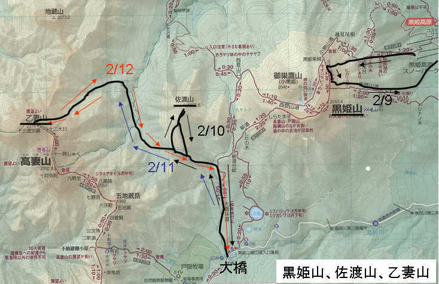 | |
| 地図 |
| ２月９日 |
| ２月９日：６：２４、始発の長野行き新幹線で東京を出る。 ８：０４、長野駅着。斉藤俊二さんと河野さんが待つ車に町さんと乗り込んだ。 青空が見えて気持ちが良い。 高速を飛ばして、約1時間で黒姫スキー場に着いた。 ゲレンデに立つと、正面に黒姫山（写真1）。 右手に青い空を背景に妙高が大きく裾を延ばしている（写真2）。 標高840m位からリフトを２台乗り継いで1100mまで登る。そこから今は動いていないリフト脇のゲレンデ跡を登っていくのだ。振り返れば野尻湖が大きい。 その左後の山は斑尾山（写真3）。 そこで準備していたパーティーは雪崩講習会で、知人が講師だった。 ヒゲ講師が、 「今日は2，30人入っていますよ。 今は晴れているけれど二つ玉低気圧が来ている。 二つ玉の足が速いので、これから天候は悪くなり、背後の野尻湖がみえなくなるでしょう」と予言した。 |
| 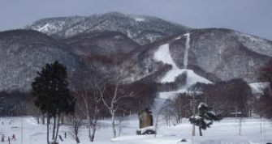 | A | 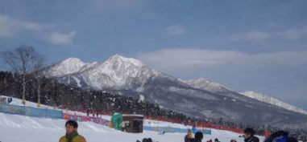 |
| （写真１） 黒姫山 | （写真２） 妙高山 |
| 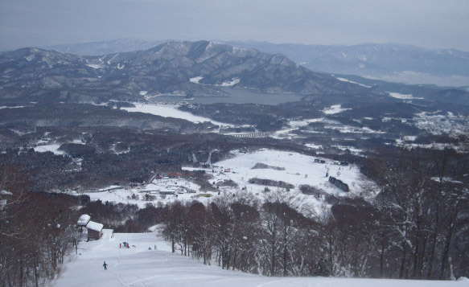 | |
| （写真３） 斑尾山 |
| １０：４０、出発する。 １１：４７に、1500mのリフト小屋跡に着いた。そこから、樹林の中に入っていくと急登になる。 外輪山の登りに入ったのだろう。
夏道は右手に巻くが、雪の季節はジグザグを切りながら直登する。 １２：３８、二度目の休み。 1700ｍ。天候は急速に悪化して、樹間から見えていた妙高が見えなくなっていた。
右手にダイナミックな急斜面があるポイントがあり、そこで数名のパーティーが雪まみれになって滑っていた。 １４：１０、外輪山の稜線に出た。2000ｍ位。
雪が降っている。 通常、吹きさらしで寒いはずだが、樹林の中で見通しが悪い分、そう寒くない。 外輪山稜線を左へ進み、東尾根下山ポイントを探す。
と、そこに4人パーティーがいて、まさにドロップ・インする所だった（写真4）。 “足がつりそう”と、ゆっくり登ってきた斉藤さんを待って意向を尋ねれば、そこはリーダー氏がイメージするポイントの少し手前の沢状の斜面だった。 私達は少し進んで、登りあげた尾根から降りることにした。 １４：４０、東尾根へドロップ・イン。 樹林の中は雪が深くてモコモコ。 しかし、富良野、八甲田と続けてきた私には雪が重くて、調子がでないで、ころんでしまう。 200m位滑って、沢の吹き溜まりで2度目の大転倒。 ありゃ、ストックが1本、見えない。 10m位上の雪面にストックのストラップ状の物が見えた。 手から離れたにしては遠いように感じたが、登り返すことにした。 壷足では登れず、シールをつけるが、1本ストックで登るのは大変で、時間を食いそうだ。 数歩、登って“ストラップ状”のものを恨めしげに見上げて確認したら草木のようだ。 ころんだ周辺を念のためにもう一度さらってみたら、やれやれストックがでてきた！ こんなところではストック1本が埋没しても難儀になることがわかった。 皆を待たせたことを反省するとともに、ストックにもトレーサーというか、赤紐をつけると良いと思った（写真5）。 ひたすら東へ東へとルートをとる。 次第に傾斜が急になってきて、踏み荒らされて、多くのトレースが錯綜する斜面に出た。 後で聞けば、30名くらいの集団が滑った後だったらしい。 我らは入山も下山も最後尾なのだった。 これでもか、これでもかというほど、急な樹林の中を下った。 左側に尾根があり、これを乗り越えるのかと思っていたが、最後は手前の沢に下りて、その尾根の末端でスキー場に入った。 １７：００から1分前、スキー場に入った。 ああ、長かった。 雪が降りしきるゲレンデには黄昏が迫っていた。 出発時にはにぎわっていた雪原に人っ子一人いず、ひときわ広大に見えた。 |
| 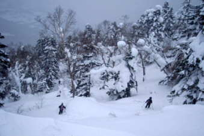 | A | 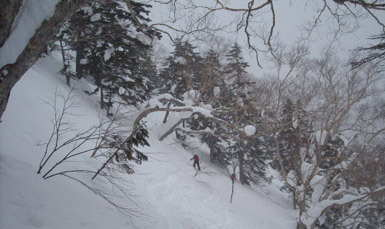 |
| （写真４） 東斜面手前の沢に先行パーティーがドロップイン |
（写真５） 樹林の中はモコモコ雪 |
| スキー場から奥裾花温泉鬼無里荘へ車で向かう。 結構、狭い山道で、これまた、これでもか、これでもかというほど遠かった。 18:35、ようやく鬼無里荘に着いた。 建物は立派で居心地が良いが、食事が冷えていたこともあって今一だった。 風呂はさっぱり湯。 食後、少しきこしめしてからバタンキューした。 初日で足慣らしの軽い山行と思っていたが、疲れた。 自分一人の感想かと思ったが、皆も大変だったという。 |
| ２月１０日 |
| ２月１０日：７：３０朝食。８：４０、出発。大橋で車を停めて、佐渡山を目指した。大橋には30台近い車が駐車しており盛況だったが、私達が遅かったせいか、人影はなかった。 車上荒らしが横行しているというので、貴重品に注意だ。 １０：１０、大橋出発。 標高1150m。１０：５７、林道を小一時間行くと、道が左右に分かれている分岐（写真6）。 |
| 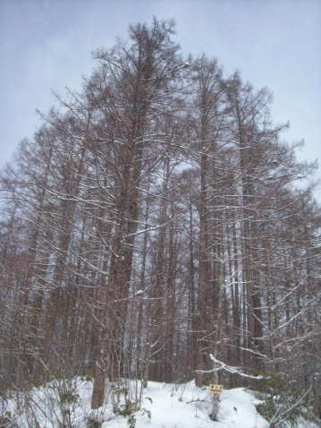 | |
| （写真６） 分岐を左に行く |
| 標高1280m。 ここまで、ほとんど傾斜がないように思えたが標高差で130m、登っていた。 雪は降ったり止んだりだが、暖かく、時折、青空が見える。 佐渡山コルを目指して左へルートをとると、ほどなく樹林の中の山道になった。 コル近くになると斜面が急になって、雪も結構深い。 先行していた4人パーティーが苦労していたので、１２：０７、1500ｍで休んだ。 彼らは男女半々で、神戸から来たテレマーカーということだった。 １２：３０頃、コルまで行かずに右折して佐渡山の登りに入る。 ナオコさんがトレースを発見して、歩くのが楽になる。 日が差して青空が広がると、気持ちが良い（写真7）。 １３：１０、稜線に出た。 眼前は黒姫らしいが展望がきかずに、よくわからない。 左手に、佐渡山へのなだらかな稜線が山頂へ続いているのが見えた（写真8）。 稜線は弧を描き、外輪山のような地形だ。 4名の1パーティーが下ってきた。 １３：４０、山頂。 標高1827ｍ。 先行していた斉藤さんと河野さんによれば、別の1パーティーが反対側を降りて行ったという。 我が隊は、稜線を、上がってきたポイントまで戻った。 視界が出てきて、眼前に黒姫がそびえていた（写真9）。 こちら向きの南西斜面は広大で、樹林が疎らで、滑れそうに見えるが、ルートファインディングが難しいらしい。 上がってきた斜面を降りずに、左手の尾根沿いに下った。 つまり、1本北側の尾根にルートをとった。 やがて、切りとおしのような尾根に出て、快調に分岐の手前まで滑り降りた（写真10）。 分岐１４：５１。 分岐からは自然に板が滑ってしまうという感じで、惰性で大橋まで滑って行った。 分岐から７分で、１４：５８、大橋に着いた。 |
| 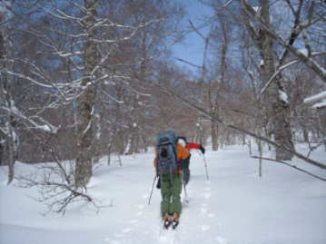 | A | 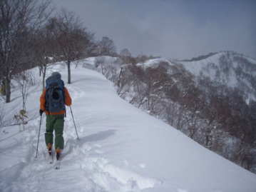 |
| （写真7） 佐渡山の登りで青空 | （写真8） 右手に佐渡山を見ながら進む |
| 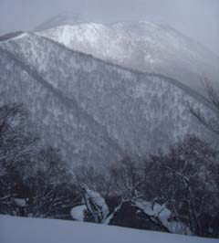 | A | 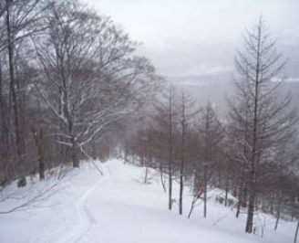 |
| （写真９） 黒姫山 | （写真10） 切り通しの尾根を下る |
| 戸隠神社前の「うずら家」の蕎麦が絶品ということだが、完売すると閉店になってしまうそうだ。 血相を変えて神告げ温泉までとんで行って、 １６：００、「うずら家」にすべりこんだ。 しぶとくも、完売閉店の1組み前だった。 待ち時間の間に戸隠神社に行った。 参道の階段は雪が積もっており、竹が×状に組まれて閉鎖されていたので、もちろんそこを登った。 山形のスキーの名手の木村さんは神社の雪の石段をスキーで滑り降りたそうな。 後日、鳥海山で肩関節脱臼をしてヘリ救助されたのは、その祟りだったのか、ご利益だったのか、知らない。 境内には樹齢700年の杉があった。 おどろおどろしさのない、こざっぱりした神社だ。 「うずら家」の蕎麦は、“おいしい蕎麦”というものを知るには良い店だ。 テンプラも名物とのことで、どうしてこんなに軽く揚げられるのか謎だ。 蕎麦食というものは歯ざわりを大事にする文化だということもわかる（写真11）。 |
| 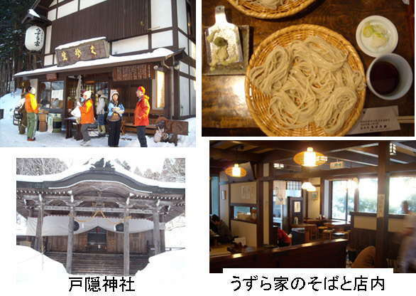 | |
| （写真１１） 蕎麦の「うずら家」 |
|
１７：３０、丸尾さんを加えて、鬼無里荘へ帰着する。 ２名を下ろしてから、買出しへと白馬へ向かう。 白馬への道は戸隠への道よりも一段と峠が高く、険しかった。 １８：２０頃、ジャスコに着いた。 店内は若者でにぎわっていた。 明晩のテントでの食材、しゃぶしゃぶ用の豚肉、野菜や餅などを購入した。 １９：１７、鬼無里荘帰着。 夕食後、部屋で野菜類の下ごしらえをした。 主婦の河野さんの手際はさすがだった。 私は適度な運動ですっかり腰痛もなくなった。 |
| ２月１１日 |
| 2月11日：７：３０、朝食。 ８：３０、鬼無里荘出発。快晴だ。 初めて道路が雪で白くなく、乾いている。 戸隠山がきれいで、写真を撮る（写真12）。
10時前、大橋着。 道路まで車が駐車していた。 数えてみれば28台。 我らは一晩置いておくので、道路ではなく駐車場の方に置きたかった。 降りてきたパーティーが車を動かしてくれたので、そこに駐車できた。
連休最終日なので、下山者が主流で、続々と降りてくる。 １０：３０大橋（1150ｍ）出発。 荷を背負っている上に、天気が良く、暑い。 ばんばん脱いでいく。
１１：１３、分岐着（1280ｍ）。 昨日と同じタイムだ。 荷は背負っているが、道が踏まれて歩きやすくなっているせいか。 佐渡山コルへの登りも歩きやすくなっており、昨日は少し苦労したターンも難なく通過した。
12：45、樹林の中のコル（1580ｍ）着。 正面の樹間に高妻山が見える。 テントが２張りあった。 テントを張りたくなるような素敵な林だ。 そこからシールをはずして氷沢川へ100m位、滑り降りる。
しばらく右岸を沢沿いに樹林の中を行って、適当な渡渉点を左岸に渡る。 前方には三角錐の白い山が見えてきた。 火打山だろう（写真13）。 左手から大きな高妻沢が合流する出会いに出た。 先ほど、高妻沢に見えていた三つの白い点が、3人のスキーヤーとして眼前に滑り込んできた。 この出合いに泊まる者が多いのか、斜面を利用した雪洞が4，5個あり、中には快適に使用できて、頂けそうというものもあった。 そこから少し登り返して、左岸をトラバるように進んだ。 結構、アップダウンがあって、一部で板を手に持って進んだ。 シールをつけてしまった方が楽だったかもしれない。 途中、昨日、コルへの登りで先行していた神戸のテレマーカー4人組みとすれ違った。 その後、2名のスキーヤーとすれ違った。 一人は、今朝7時に大橋を出て日帰りで、本日、山頂に立ったのは3名位という。 「スキーのうまい人は山頂から下れるでしょうが、僕はコルまで降りてから滑りました」という。 それにしても、大橋の駐車場の車の多さに比べて、すれ違った登山者の少なさが不思議だ。 |
| 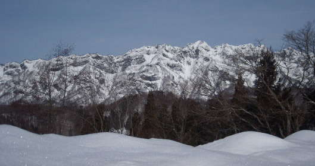 | |
| （写真１２）１戸隠山 |
| 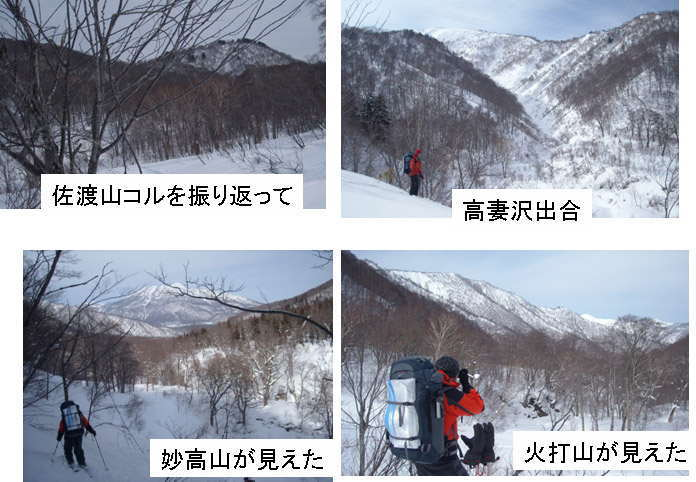 |
| （写真１３） |
| 多くの登山者が高妻から下りてくる前だったのか。 あるいは佐渡山か五地蔵に分散しているのか。 １４：５５、乙妻沢出合いの少し手前の平らな樹林の中で幕営することにした。 標高1440m。 ２張りのテントに２名と３名に分かれた（写真14）。 夕食はしゃぶしゃぶ。 白菜、白ねぎにしいたけ、しめじ、エリンギを合わせる。 漬け汁はポン酢。一泊なのでガスをふんだんに使える。食材が残ったので、明朝の卵雑炊の具にすることにした。 クラウドさんが生干しイカを３枚も持ってきており（重かったことだろう！）、「肴はあぶったイカで良い」と、網で焼いて食べた。 夜、外に出ると星が出ていた。 晴天を期待して２１：００、就寝。 |
| 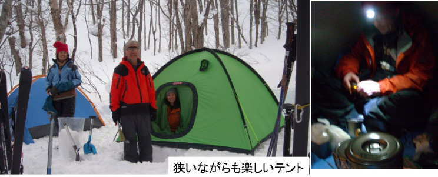 |
| （写真１４） |
| ２月１２日 |
| 2月12日、５：１０、起床。 夜間、思ったほど冷えなかった。 無念、雪がテントを打つ音がしている。 ナオコさんによれば３時頃から降り始めたという。 しかし、幸い、雪はひどくなる様子ではなく、７：５０、予定通り小雪の中を出発する（写真15）。 最初は傾斜のゆるい樹林帯を登っていく。 ８：５０、1700ｍ。 暑いので脱ぐ。 相変わらず小雪。 トレースはしっかりついている。 一休み後から次第に傾斜が立って、樹林が疎らになってきた。 展望は200ｍ位か。幾段か過ぎる。 ９：５０、1900ｍ弱位。 順調に高度を上げている。 越えても、越えても、次が出てくるという感じだ。 雪が止んで、ぼけているが向かいの尾根まで見渡せる（写真16）。 |
| 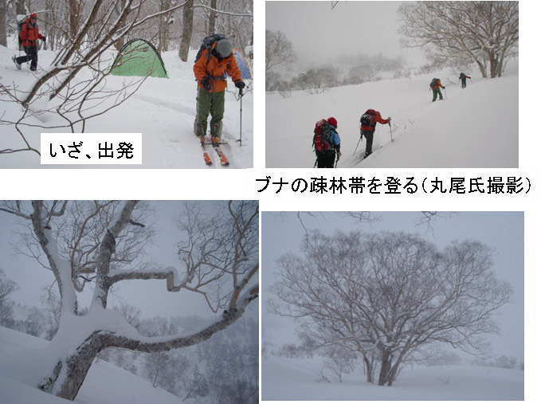 |
| （写真１５） |
| 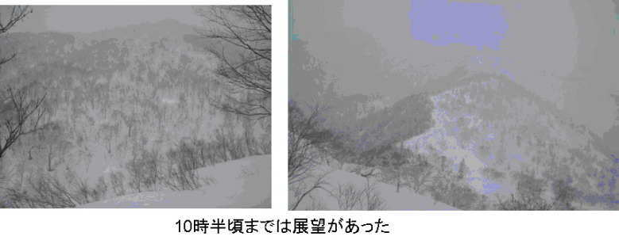 |
| （写真１６） |
| しかし、降り続いた雪でトレースを見失っていた。 斜面は一層立ってきて、険阻だ。 振り返ったら、6，70m下の平らになっているところにうっすらと、左の稜線に向かうトレースが見えていた。 しまった、あれをたどってコルへ出れば楽だったのだ。 河野さんが、“下ってトレースをたどる”ことを主張したが、丸尾さんとリーダー氏は、下るのは億劫ということと、もうすぐ山頂と考えて、直登することを選んだ。 たしかに、山頂と思われる塊が30m位上方に見えていた。 しかし、斜面はさらに立って、雪が一段と不安定と思われる場所もあり、そこでのターンも必要だった。 高度計は山頂高度（2318m）を越えており、あと数ターンで登れると思われた。 しかし、雪崩を懸念するリーダーの判断で降りることにした。 突っ込みすぎたかなあ。 右手の傾斜の少し緩んだ所までシールをつけたまま下って、そこでシールをはがした。 １２：４０、滑降を開始する。 しかし、こんな時になって、何ちゅうこっちゃ。 先ほどと違って視界があまりなくなっていた。 おまけに広大な斜面だ。 樹林の間を右に左に行くが、さすがリーダー。 好判断でトレースがあるルートに出られた。 そこからは、もう、ブナの疎林の中、パウダー大滑降だった（写真17、18）。 パウダー命のリーダー氏が舞う。 思い切り突っ込んで滑っても、まだ、まだパウダーは尽きないという感じだ。 パウダーがこのように続く滑降は初めてだ。 パウダー斜面のてんこ盛り。 最後は、ゆるい傾斜の樹林帯を流して、13：15、テント帰着。 |
| 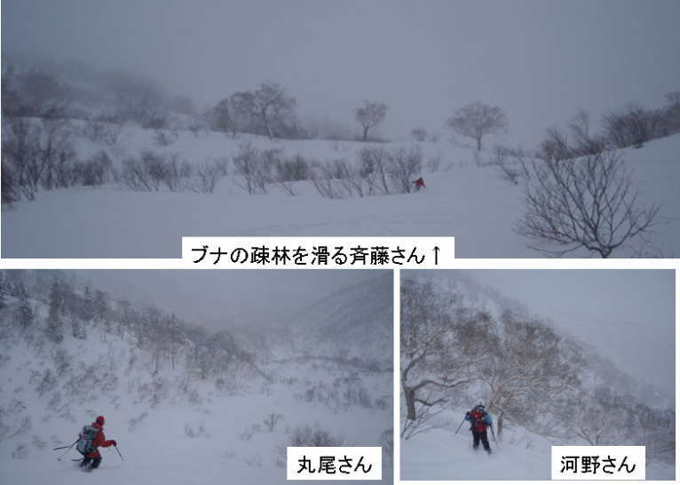 |
| （写真17） |
| 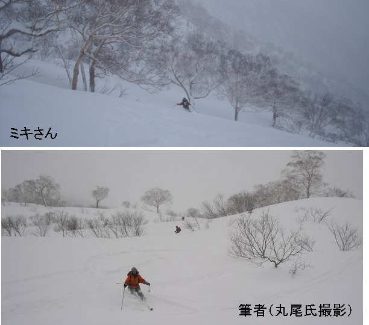 |
| （写真18） |
|
天幕には雪が積もっていた（写真19）。 14：00、テントを撤収して後にする。最初からシールをつけて行く。 14：33、高妻沢出合い。 15：30、コルへの登り返しに入る。 コルにはテントが1張りあって、スキー板が2本立ててあった。 本日遭遇した唯一の人間だ。 登ってきた尾根の木立の間を縫って下る。 16：50、分岐着。そこから8分で大橋に到着。 17：00数分前で、予定通りだった。 神告げ温泉へ向かう。 温泉入浴後、御利益セットなる蕎麦とテンプラの定食をとる。 店の女性が、私達が乙妻山に行ってきたと聞くと、「皆さん、全然、疲れて見えませんねえ」と、驚いていた。 充実感は疲労を感じさせないものか。 外に出てみれば雪が降りしきっていた。 シャルマン戸隠スキー場から夜行バスで関西へ帰るナオコさんと丸尾さんをスキー場に送る。 じゃんじゃんと降る雪の中、長野まで出るのも最後のアドベンチャーのようだった。 それでも私は居眠りしてしまったか、気がつく灯りがにぎやかな街を走っていた。 20：40、長野ICから高速に入る。 クラウド氏の不眠不休の運転によって東京の自宅に日付の変わる頃につくことができた。 |
| 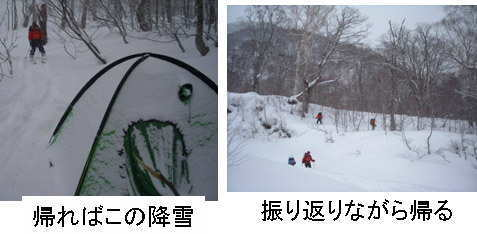 |
| （写真１９） |